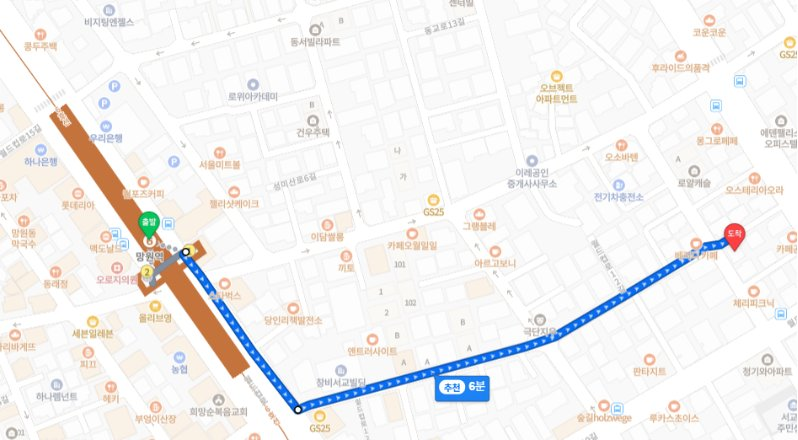
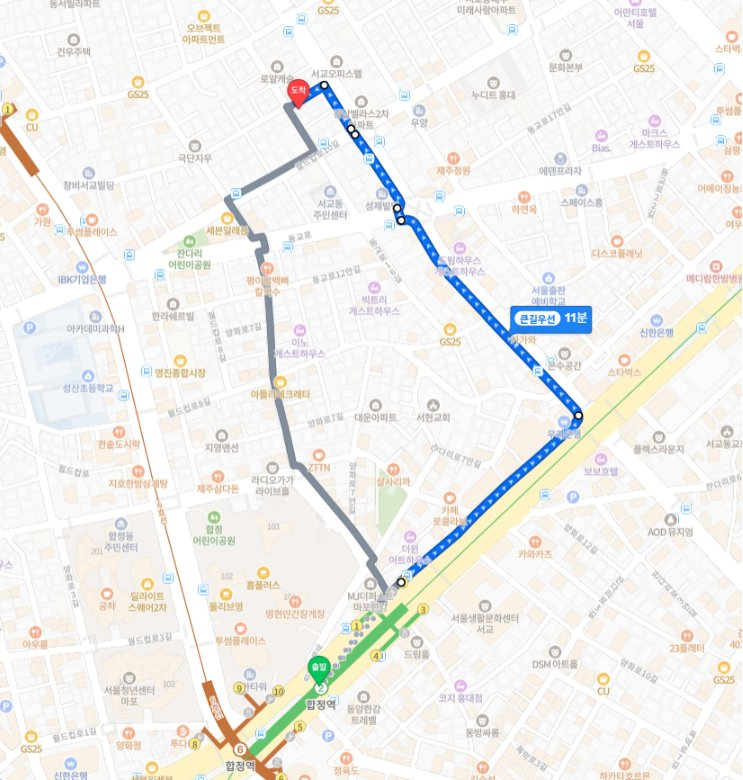
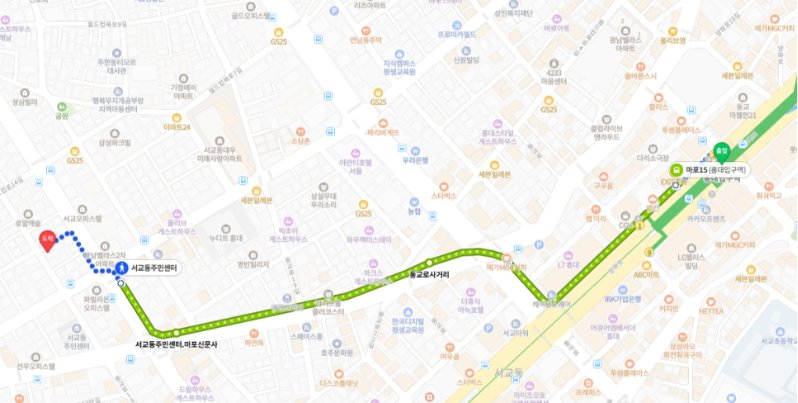
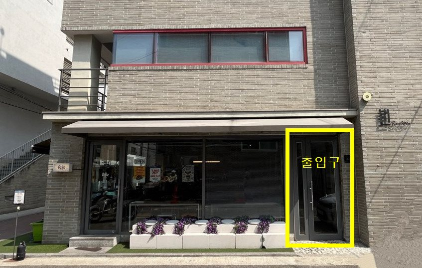
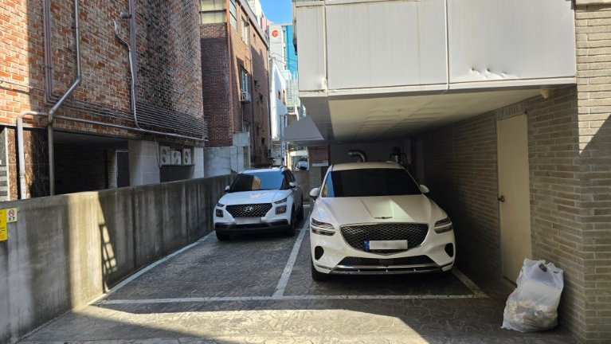

찾아오는 길
망원역 1번 출구에서 걸어서 5분
서울특별시 마포구 서교동 468-22, 4층. 방문 상담은 미리 예약해 주세요. 자료는 카카오톡으로 받을 수 있어 방문하지 않고도 진행할 수 있습니다.
- 주소
- 서울특별시 마포구 서교동 468-22, 4층
- 상담 시간
- 평일 09:30~18:00
토요일 사전 예약 상담, 공휴일 휴무 - 전화
- 02-6941-1332
- 카카오톡
- 현영 세무회계 채널
대중교통 이용 시
대중교통을 이용하신다면 망원역에서 걸어오시는 길이 가장 짧습니다.



자차 이용 시
건물 뒤편 주차장과 카페 앞에 주차할 수 있습니다. 골목이 좁으니 주차가 어려우시면 02-6941-1332로 연락 주세요. 주차를 도와드립니다.


상속세, 세무조사 상담은 세무사가 직접 받습니다
최초 전화상담은 무료입니다. 상황을 알려주시면 필요한 절차와 예상 비용을 먼저 안내해 드립니다.